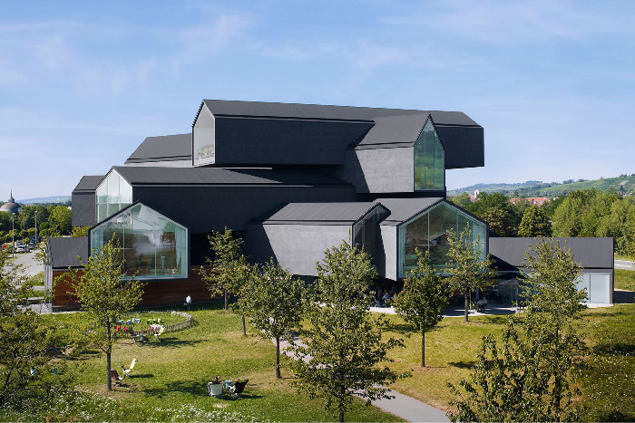
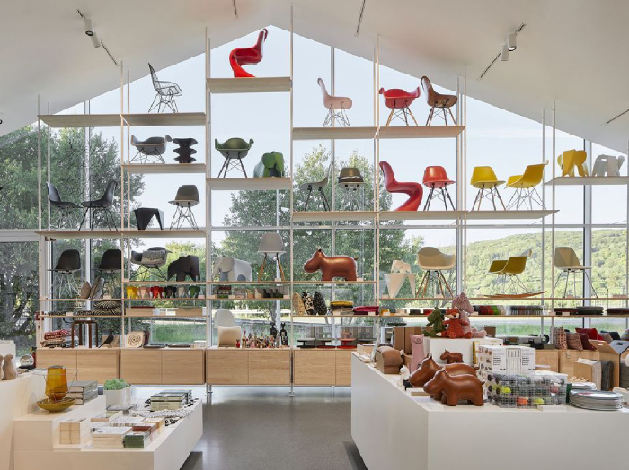
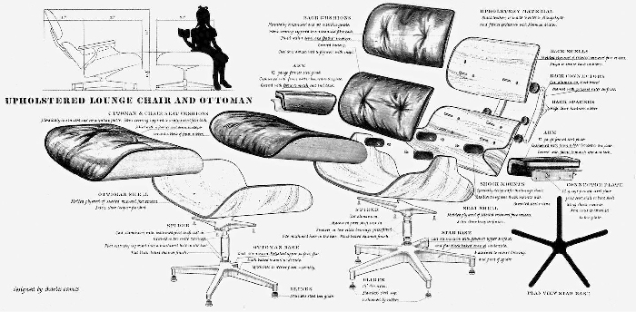
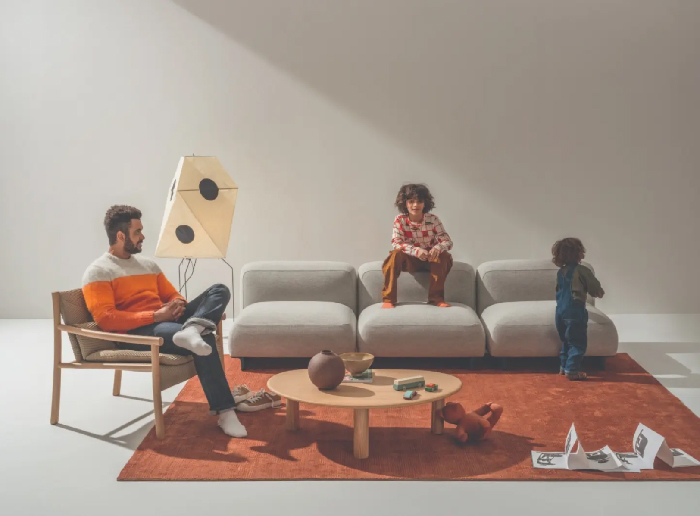
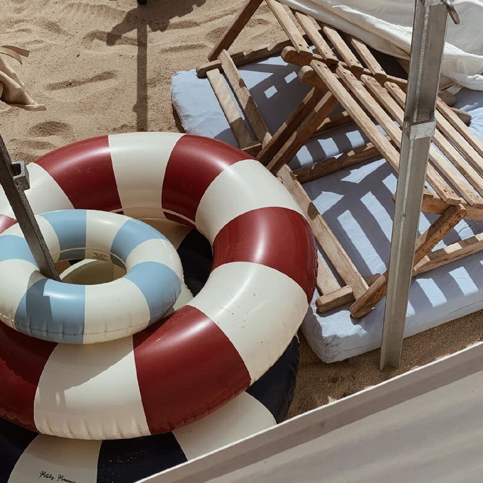
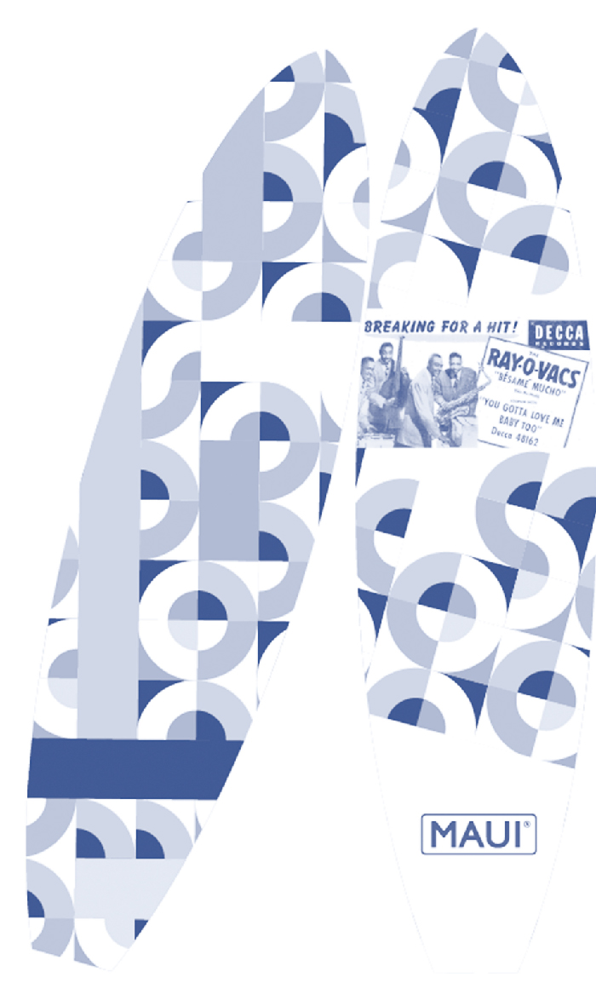
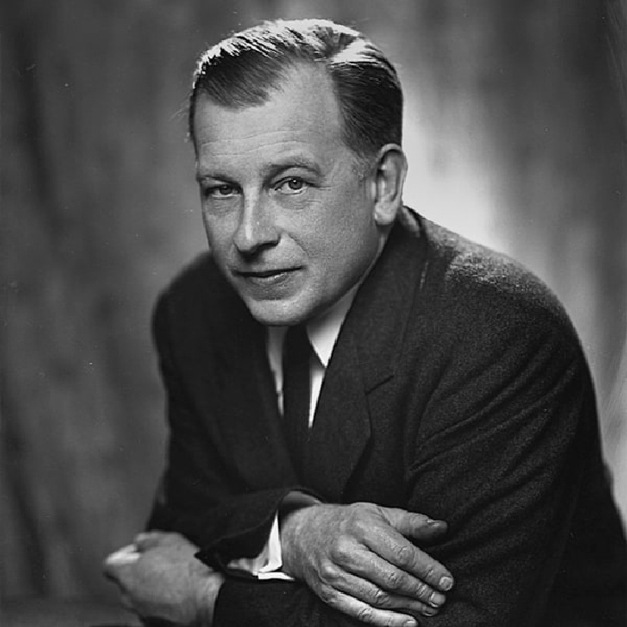
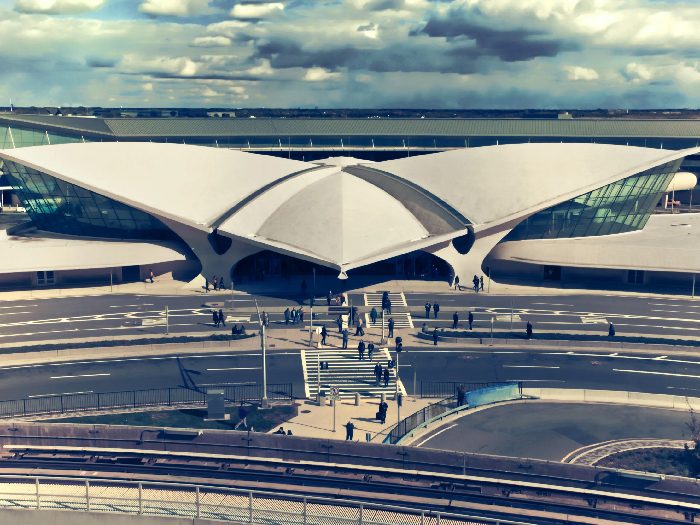
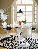

salon
l'architecture
Le SwissDesignFair a été créé en 1995 pour mettre en valeur et promouvoir le design et l’architecture d’intérieur suisses.
les produits
La créativité formelle et ingénieurale des produits, la qualité des matériaux et la finesse des réalisations en font un Salon à la renommée mondiale.
la création
Les produits sont créés à la mains par nos artisants avec des matériaux durables garantis pour l’environnement.
produits
EXPOSITION TEMPORAIRE: Remonter Le Temps
Du 6 au 12 juin
Informations pratiquesplanning
au programme
Durant six jours, le SwissDesignFair accueille des grandes marques, des industriels, des éditeurs de meubles et des créateurs indépendants.
- 6 jours
- 150 exposants
- 280 marques
- 1 portrait - rétrospective
- 1 exposition thématique
avant-goût
nostalgie
Avec plus de 150 exposants, le salon accueil aussi une exposition exclusive d’exposants en lien avec les activités de plage de l’époque ainsi que la présentation biographique du célèbre architecte, Eero Saarinen.
Let's paddling on time
Revivez les années 50 à 70 sur une série de trois paddles avec un design unique en lien avec les groupes musicaux.
eero saarinen
Eero Saarinen est un architecte et designer américain d'origine finlandaise né le 20 août 1910 à Kirkkonummi.
Fils d'Eliel Saarinen, architecte finlandais réputé, il émigre avec sa famille alors qu'il est adolescent. Après des études d’architecture, il rejoint le cabinet de son père, avec qui il collabore. Peu à peu, il gère ses propres projets et concours architecturaux. Il obtient notamment la construction de la Gateway Arch en 1948. À la mort d’Eliel Saarinen, il reprend les rênes de l’entreprise et multiplie les projets. Il conçoit une grande variété de bâtiments : des sièges sociaux de société, entre autres pour General Motors et Bell, des habitations privées, des bâtiments de facultés à l'université Yale et au Massachusetts Institute of Technology (MIT), des terminaux d'aéroport (Dulles, TWA Flight Center). Son style architectural évolue au fil des années, passant des formes rectilignes à des conceptions multipliant les courbes.
TWA Flight Center
Il conçoit aussi des meubles. il entame une collaboration à long terme avec la société Knoll, au sein de laquelle il crée notamment la chaise Tulipe.
informations pratiques
Du 6 au 11 juin 2023
10:00 - 21:00
Tarifs
1 jour : CHF 35.–
3 jours CHF 60.–
6 jours CHF 75.–
Rte François-Peyrot 30
1218 Le Grand-Saconnex
T. +41 22 761 11 11
Voiture : parkings
Train : gare Genève Aéroport
Bus : N°23 ou N°28